Welkom op de pagina voor de verkiezingen van het Kotrisiaanse parlement. Al meer dan 6 jaar zet de Kiescommisie zich in om eerlijke en vermakelijke verkiezingen te houden. Hier ziet U een kleine greep uit haar rijke historie:
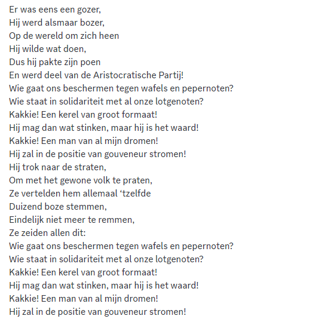 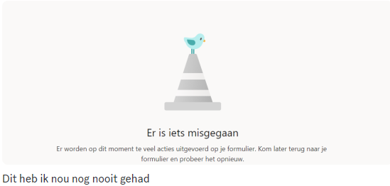 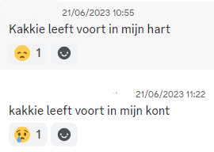 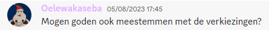 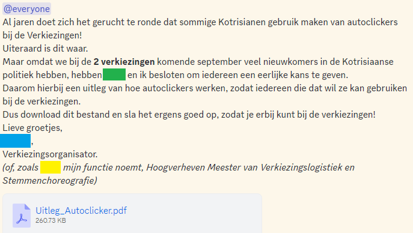 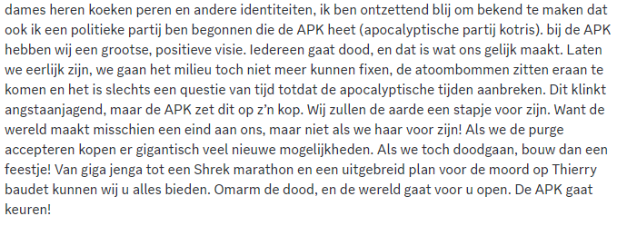 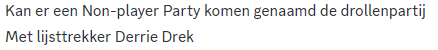 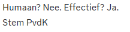 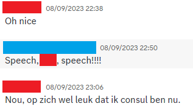 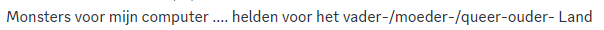 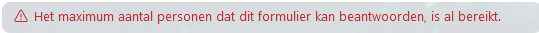 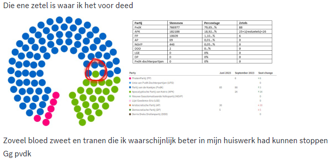 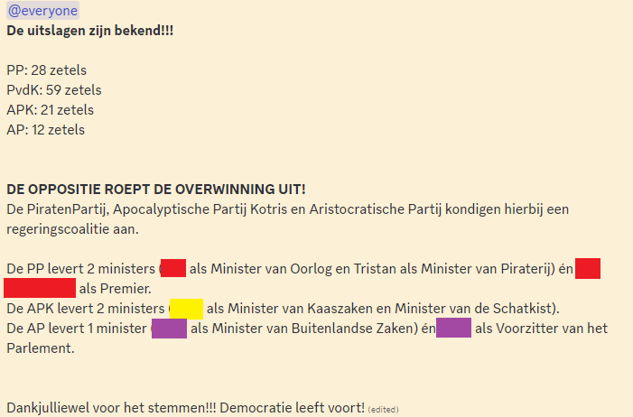
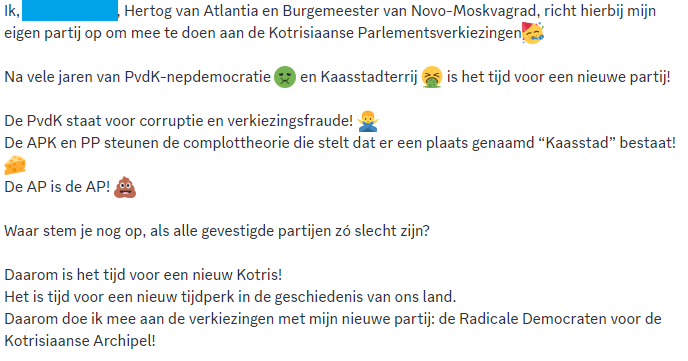
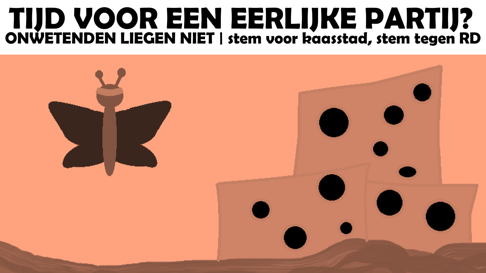
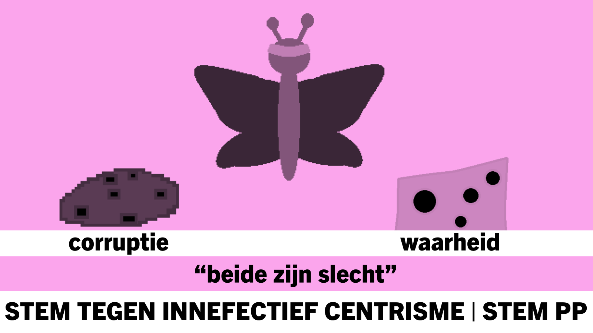
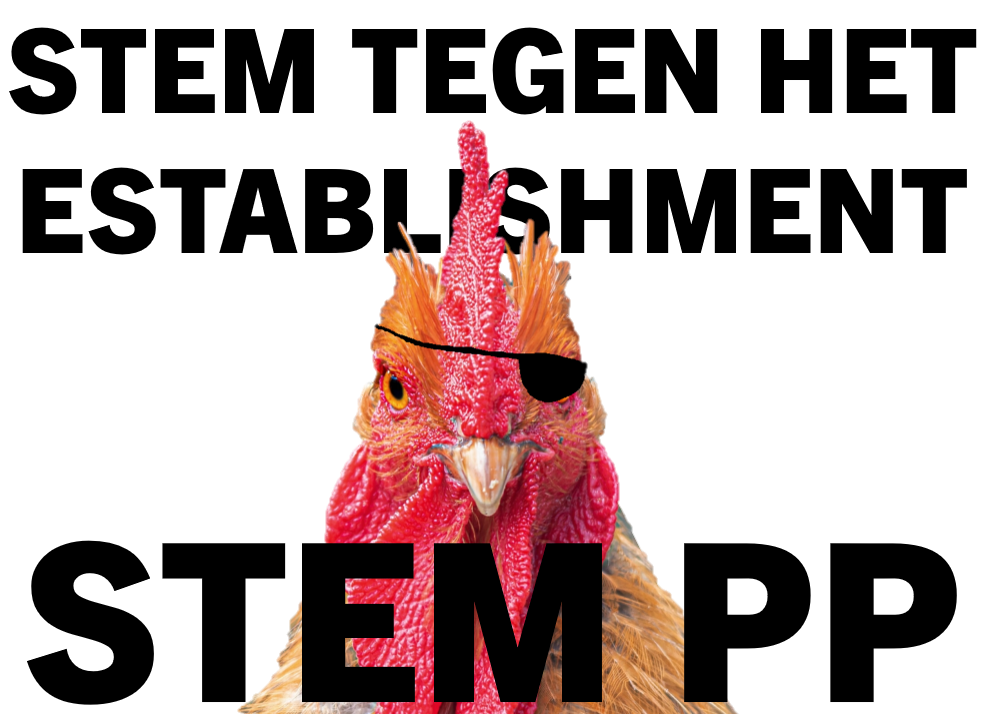
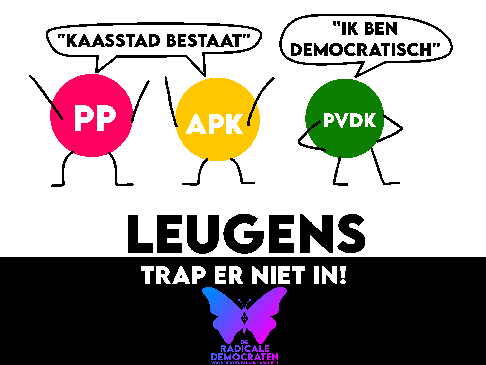
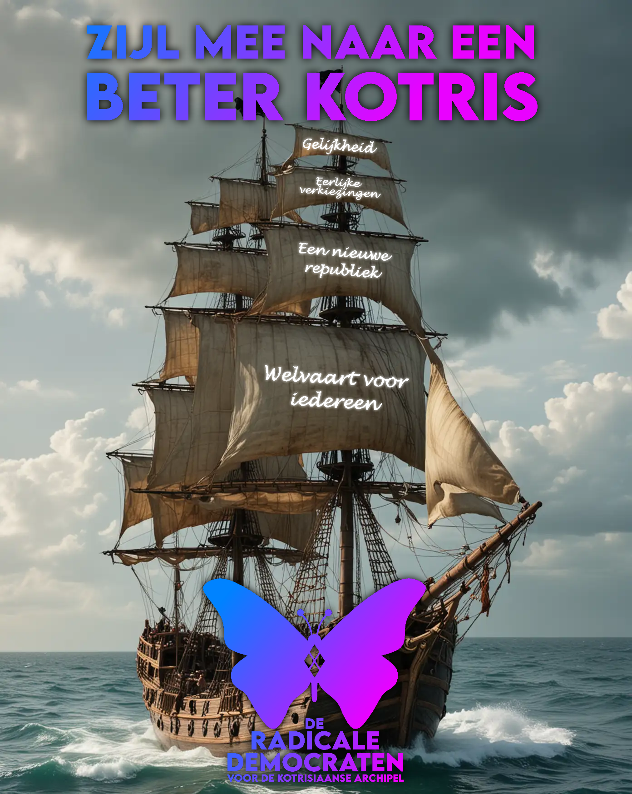
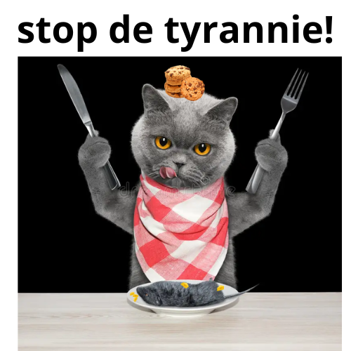
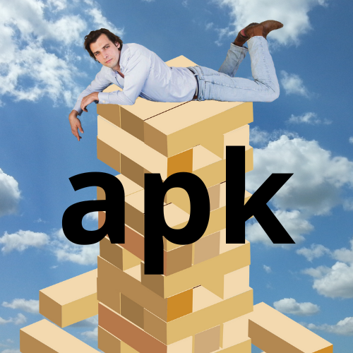
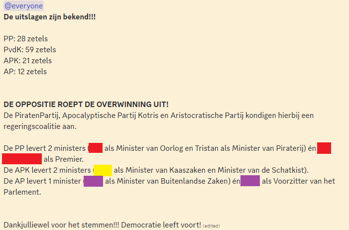
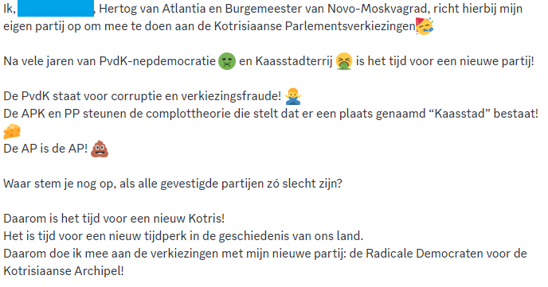
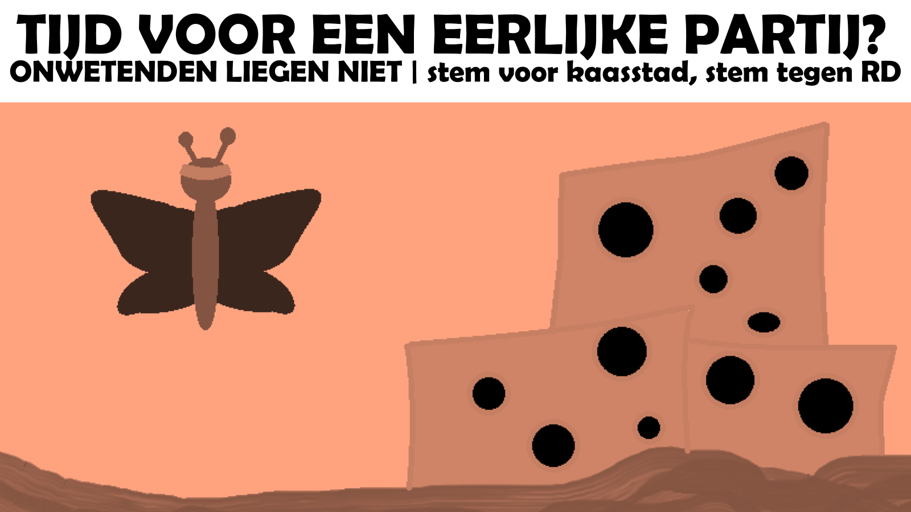
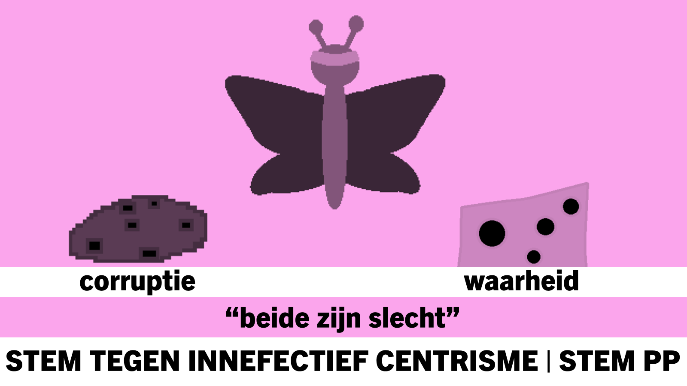
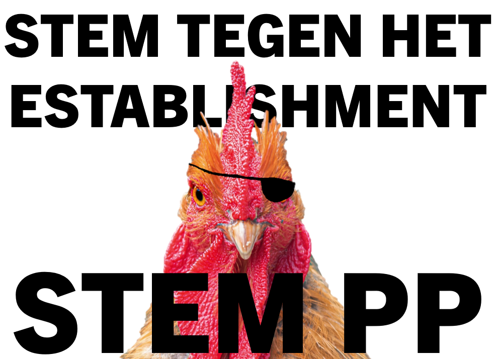
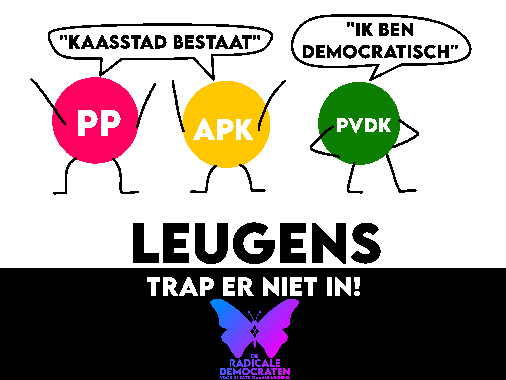
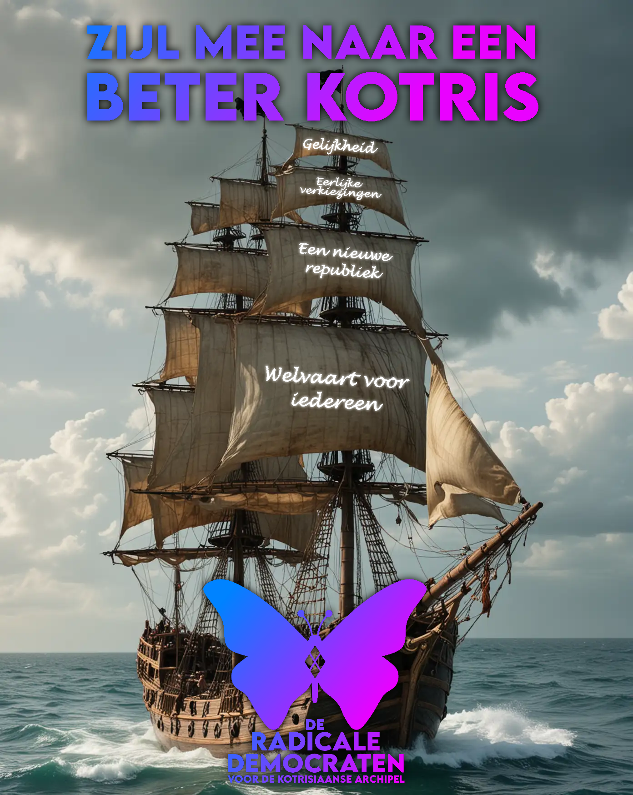
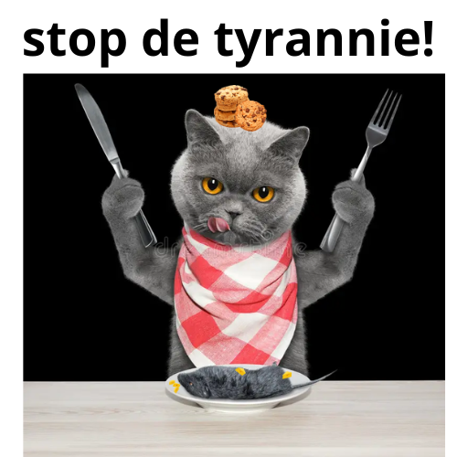
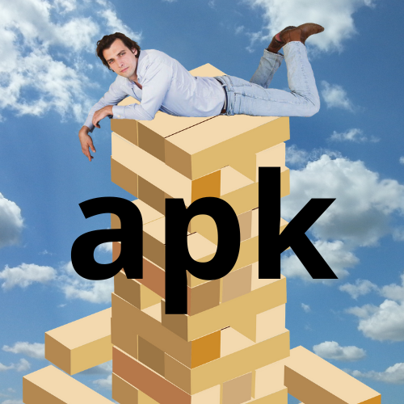